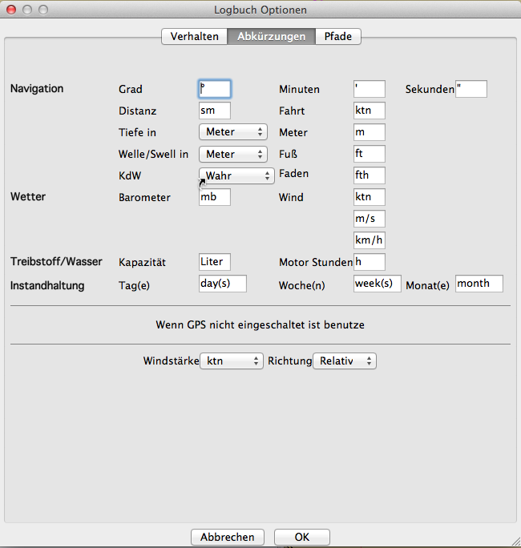
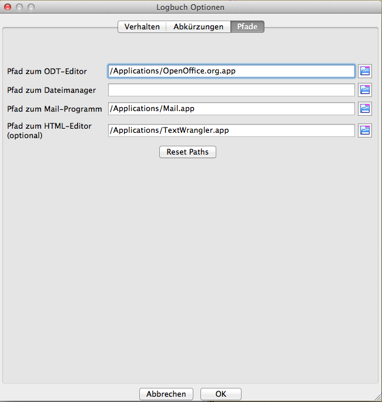

Logbuch Plugin
Diese Beschreibung für das Logbuch basiert noch auf der Beta-Version 0.909 des Plugins.
Inzwischen ist die Version 1.1957 aktuell und diese hat nun eine eingebaute Hilfe. Mit Eingabe von Help, aktivieren von HTML und mit "Ansehen" kann, wie im Bild unten gezeigt, die aktuelle Logbuch-Hilfe aufgerufen werden. Allerdings ist diese Hilfe noch nicht ganz fertig, so daß hier noch ersatzweise untenstehende Ausführungen behalten wurden.
Der folgende Text gilt also noch für die ältere Version:
Wie üblich, wird das Plugin in den Einstellungen aktiviert.

Nach Aktivierung des Plugins ist der Button "Einstellungen" zugänglich, mit dem das Fenster "Einstellungen für Logbuch" öffnet:
Hier werden verschiedene Einstellungen zum Erscheinen und Verhalten des Logbuchs gemacht:
In der ersten Lasche dieser Logbuch Optionen können ein Reihe weiterer Einstellungen vorgenommen werden, zu dessen Erklärung wir im folgenden Text noch kommen. Wichtig ist zunächst der Button "Timer an/aus", der automatische Logbuch Einträge nach der eingestellten Zeitspanne generieren kann. Diese Einstellung kann auch im Logbuch selbst mit einem Rechts-Klick im Kontext-Menü aktiviert oder deaktiviert werden.

In der Lasche "Abkürzungen" können individuelle Abkürzungen festgelegt werden, die das Plugin verwenden soll.

Die Lasche "Pfade" gestattet, die Suchpfade zu vom Logbuch verwendeten Zusatzprogrammen festzulegen. Beachten Sie, daß es sich bei diesem Beispiel im Bild um Einstellungen für Mac OS X handelt. Die Pfade können entweder händisch in die Felder eingetragen werden oder mit Hilfe der Symbole rechts von den Feldern gesucht und übernommen werden.
Das Logbuch
Das Logbuch besteht aus mehreren Laschen für die verschieden Aufgaben, die das Logbuch übernehmen kann. Das sind:
Beginnen wir mit dem Logbuch.
Lasche Logbuch

Wie schon erwähnt, kann mit einem Rechts-Klick in die Zeilen der Spalten der Timer, der für die automatischen Einträge von neuen Zeilen sorgt, ein- oder ausgeschaltet werden. Das mit Rechts-Klich zu erreichende Kontext-Menü kann in den verschiedenen Spalten unterschiedlich aussehen. In jeder Spalte sind aber damit anwählbar:
Zusätzlich kann in Spalte "Route" ein Auswahlfenster mit in OpenCPN gespeicherten Routen gewählt werden und damit eine Route übernommen werden.
Weiterhin kann in Spalte "Wache" der Name des Wachhabenden aus einer erscheinenden Auswahl übernommen werden, die auf der Crewliste basiert.
Die Einträge in den Zellen der Logbuch-Tabelle können mit Klick in die jeweilige Zelle editiert oder ergänzt werden, wenn z.B. in die Zelle keine NMEA Daten automatisch übernommen werden konnten oder die Zeile mit dem Button "Neue Zeile" oben links von Hand erzeugt wurde.
Das Logbuch besteht aus den Laschen
Die bei "Maschine/Segel" zu machenden Eintragungen sollten bei Treibstoff- und Wasserverbrauch mit einem Minus-Zeichen versehen werden, um den aktuellen Stand bei Treibstoff gesamt und Wasser gesamt von der ersten Zeile in der Tabelle herunter rechnen zu können. In der ersten Zeile der Tabelle wird also der Bestand bei Abfahrt eingegeben. Bunkerungen von Treibstoff oder Wasser werden natürlich ohne Minus-Zeichen eingegeben.
Die Art der Eintragungen sollte selbsterklärend sein. Die zu verwendenden Einheiten ergeben sich aus der Lasche Abkürzungen in den Logbuch Einstellungen (siehe oben).
Mit dem Button "Export" oben werden die Daten wahlweise in eine HTML- oder OpenOffice-Datei gespeichert, um sie mit dem Internet-Browser (HTML) oder mit OpenOffice ansehen zu können. OpenOffice muß dann natürlich installiert sein, der Internet-Browser Safari ist hingegen wohl vorhanden. Mit Wahl des Layouts (Button rechts von "Export") wird eines der bei der Installation (siehe oben) gespeicherten Layouts zur Anzeige der Daten im jeweiligen Format verwendet. Das Format wird mit Buttons "HTML" oder "ODT" gewählt. Wurde bei der Installation dieses Plugins alles richtig gemacht, also Pfade richtig gesetzt und OpenOffice auch vorhanden, dann können die Daten mit dem Button "Ansehen" im jeweiligen Format angesehen werden:
HTML-Format

OpenOffice-Format
Beachten Sie, daß die Ausgabe vom gewählten Layout abhängig ist. Mit etwas Übung können Sie ihre eigenen Layouts erstellen, vorhandene Layouts abändern, löschen, filtern nach einem vorzugebenden Prefix, umbenennen, per Email an den Programmierer versenden (er freut sich darauf) oder ein mit dem Datei-Requester ausgewähltes in Ihre Layout-Sammlung überführen. Verwenden Sie zum Aufruf dieser Schritte den Button "E", um zum Menü im Bild unten zu gelangen.
Das Logbuch Fenster poppt bei jedem Eintrag automatisch auf, wenn der Timer angeschaltet ist und damit eine neue Zeile erzeugt wird. Somit haben Sie dann die Möglichkeit, die Felder der neuen Zeile zu ergänzen. Deaktivieren Sie danach nicht das Logbuch in der Werkzeugleiste von OpenCPN, sondern schließen Sie nach dem Editieren nur das Logbuch Fenster. Ansonsten kann der Timer keine neuen automatischen Zeilen mehr erstellen.
Mit den jetzt noch nicht vorgestellten Buttons "Neues Logbuch" und "Wähle Logbuch" kann entweder ein neues Logbuch erstellt werden und damit das alte aktuelle Logbuch archiviert werden, an dem dann keine Änderungen mehr vorgenommen werden können, oder es kann ein Logbuch zur Anzeige gebracht werden aus der Auswahl der schon vorhandenen Logbücher.
Lasche Übersicht
Die Lasche "Übersicht" stellt eine Übersicht über alle vorhandenen Logbücher dar. Es werden unter anderem Durchschnittswerte der Daten aus den Logbüchern angezeigt:
Lasche Crewliste
Die Lasche "Crewliste" nimmt die Daten der Crew und deren Wacheinteilung auf. Diese Daten werden im Logbuch weiter verwendet (siehe oben). Der Ausdruck über den Export nach OpenOffice kann (sofern man denn einen Drucker an Bord hat) erforderlichenfalls bei den Hafenbehörden helfen:
ODT-Format
Lasche Boot
Hier können alle Daten über das Boot aufgenommen werden und zusätzlich auch eine Inventarliste. Der Ausdruck einer Inventarliste kann bei manchen Hafenbehörden nützlich sein oder auch in der Winterpause, um sich auf die nächste Saison vorzubereiten. Letzteres gilt auch für die letzte noch vorzustellende Lasche "Instandhaltung".
Lasche Instandhaltung
Die Lasche "Instandhaltung" hat wiederum drei Unterlaschen
Unter "Service" können alle zu erledigenden Servicearbeiten dokumentiert und mit einem Warnwert hinterlegt werden. Die einzelnen Felder sind selbsterklärend.
Das Gleiche gilt für zu erledigende Reparaturen. Wem ist es nicht schon passiert, daß man entsprechende Zettel vom Törn verlegt hat?
Last-but-not-least eine Tabelle zur Gedächnisstütze zum Kauf von Zubehör nicht nur für die gemerkten Arbeiten oben sondern vielleicht auch sonst.
Hinweis
Wenn nun nicht alle Funktionen des Logbuchs auf Anhieb funktionieren, liegt es vielleicht nicht am Anwender sondern kann auch auf Programmierfehler zurückzuführen sein. Der Programmierer bittet daher um Anwender-Berichte, um Fehler beseitigen zu können. Verbesserungswünsche sind ebenfalls herzlich willkommen, um dieses Plugin zu einem wertvollen Bestandteil von OpenCPN machen zu können.